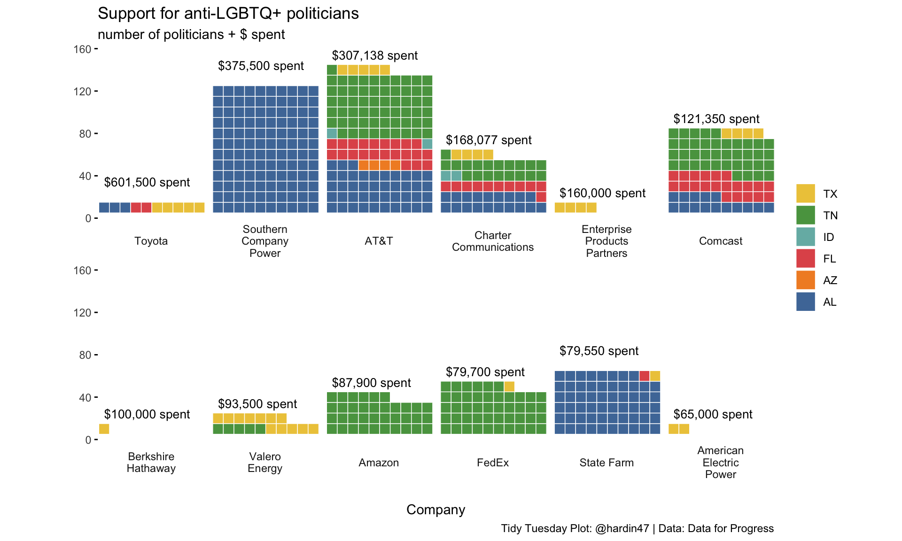

all_pride <- read_csv("contribution_data_all_states.csv") %>%
drop_na(Company) %>%
group_by(Company) %>%
mutate(tot_spend = sum(Amount)) %>%
filter(tot_spend >= 65000) %>%
ungroup() %>%
mutate(Company = ifelse(Company == "Southern Company (Georgia Power, Alabama Power, Mississippi Power)", "Southern Company Power", Company)) %>%
mutate(Company = factor(Company, levels=unique(Company[order(desc(tot_spend))]), ordered=TRUE))
levels(all_pride$Company) <- stringr::str_wrap( levels(all_pride$Company), width=12 )
#all_pride %>% select(Company) %>% table()Pride Donations
6/7/2022
The Data
The data this week comes from Data For Progress. The data describe donations to anti-LGBTQ+ organizations with information on political fallout.
Donations to anti-LGBTQ+ politicians
library(waffle)
gg <- glue::glue
all_pride_waffle <- all_pride %>%
group_by(Company, State) %>%
summarize(n = n(), tot_spend = sum(Amount))
all_pride_waffle2 <- all_pride_waffle %>%
group_by(Company) %>%
summarize(tot_spend = sum(tot_spend), tot_pol = sum(n))
all_pride_waffle %>%
ggplot() +
geom_waffle(aes(fill = State, values = n), color = "white", size = .25, n_rows = 10, flip = TRUE) +
#geom_text(aes(x = Company, y = tot_pol %/% 10,
# label = paste(" total donation: $",tot_spend, sep = ""))) +
scale_x_discrete(limits = "") +
scale_y_continuous(labels = function(x) x * 10, # multiplier same as n_col
expand = c(0,0),
limits = c(0,16)) +
geom_text(
data = tibble(
idx = c(1:12),
Company = all_pride_waffle2$Company[idx],
y = (all_pride_waffle2$tot_pol[idx] %/% 10),
actual_spend = all_pride_waffle2$tot_spend[idx],
lab = gg("{scales::comma(actual_spend, 1, prefix = '$')} spent")
),
aes(1, y, label = lab),
vjust = 0, hjust = 0, nudge_y = 2,
size = 3.5, lineheight = 0.875
) +
facet_wrap(~Company, nrow = 2, strip.position = "bottom") +
ggthemes::scale_fill_tableau(name=NULL) +
coord_equal() +
labs(
title = "Support for anti-LGBTQ+ politicians",
subtitle = "number of politicians + $ spent",
x = "Company",
y = ""
) +
theme_minimal() +
theme(panel.grid = element_blank(), axis.ticks.y = element_line()) +
guides(fill = guide_legend(reverse = TRUE))